I design and ship multi-agent AI systems — retrieval pipelines, tool-using agents, and the AWS infrastructure that gets them into production. Currently building GenAI systems at Cognus Technology, finishing a B.Tech in AI/ML.
I'm an AI/ML engineer who spends most of my time on the parts of GenAI systems that don't show up in a demo: making retrieval hold up against adversarial input, keeping agent graphs from looping forever, and getting the whole thing to run somewhere other than my laptop.
My background is applied — internships doing text classification and predictive modeling before I moved into agentic systems and RAG. I'm AWS Certified (AI Practitioner and Cloud Practitioner) and comfortable taking a system from a notebook to a deployed AWS stack.
A few systems I've built end to end — the links go to real code, not a demo reel.
I built a document assistant that lets anyone upload a PDF and get cited, page-level answers back, including from charts and diagrams, since I render chart-heavy pages to images and describe them with a vision model rather than throwing away everything that isn't text. A LangGraph ReAct agent decides which tool to call, the same tools are exposed over MCP so Claude Desktop can use them directly, each session gets its own isolated Qdrant Cloud namespace, and I log RAGAS scores to MLflow on every CI run instead of eyeballing quality once.
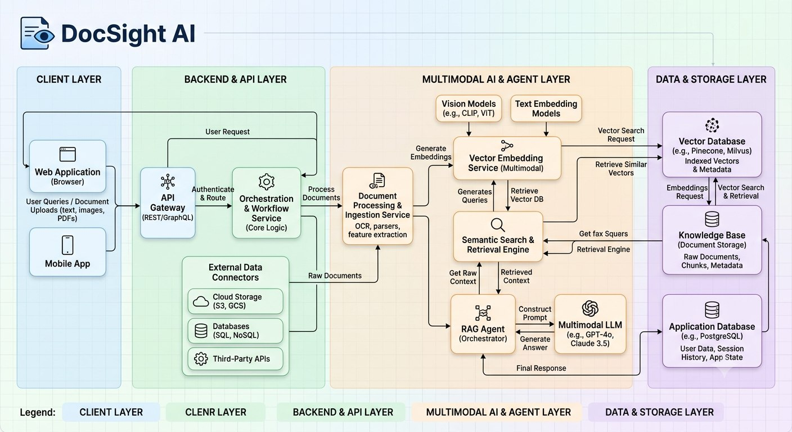
I designed and built the Search → Reader → Writer → Critic pipeline diagrammed in the hero above. Four agents coordinate to research a topic and draft a structured report, and I made the Critic loop work back to the Writer until the draft actually holds up, rather than accepting the first pass.
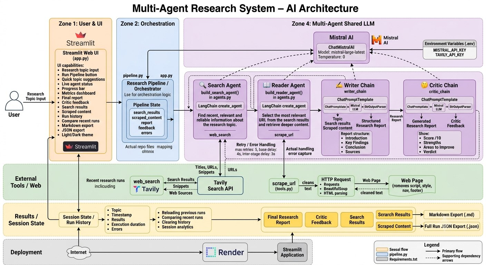
I split a trip-planning request across five LangGraph agents — three of them (budget, local info, transport) run in parallel since none of them depend on each other, only on the planner's output, and a writer agent waits for all three before producing the final day-by-day itinerary. I deployed it three separate ways on AWS as a deliberate exercise in deployment patterns: serverless (Lambda + API Gateway), a single Dockerized EC2 instance, and load-balanced across two EC2 instances, all sharing one Cognito login and DynamoDB table.
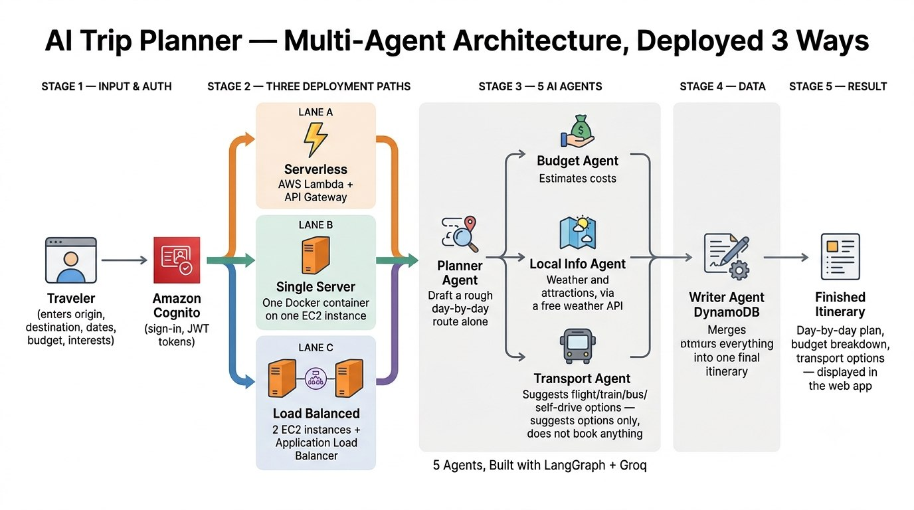
I built a Flask-backed assistant that handles student queries across 8 categories (exams, fees, hostel, etc.) using confidence-scored intent matching, so a low-confidence match falls through to a fallback response instead of confidently guessing wrong.
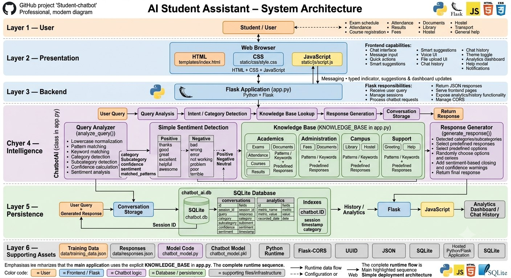
I trained a CNN classifier (transfer learning on EfficientNet-B4) to flag manipulated face images, with an OpenCV preprocessing step I added to detect and align faces before they hit the model — cropped, consistently-oriented faces made a measurable difference to how the classifier performed compared to feeding it raw images. This is the same system I later wrote up as a peer-reviewed paper (see Research below), extended with a CNN-LSTM hybrid and a hashing-based authentication module.
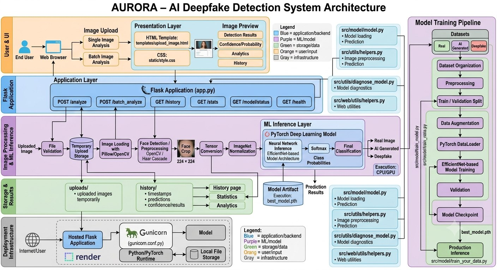
I built a retrieval-augmented system that detects when its own retrieved sources contradict each other, and holds up against adversarial prompts trying to override its instructions. I evaluated it against a fixed adversarial suite rather than spot-checking it by hand.
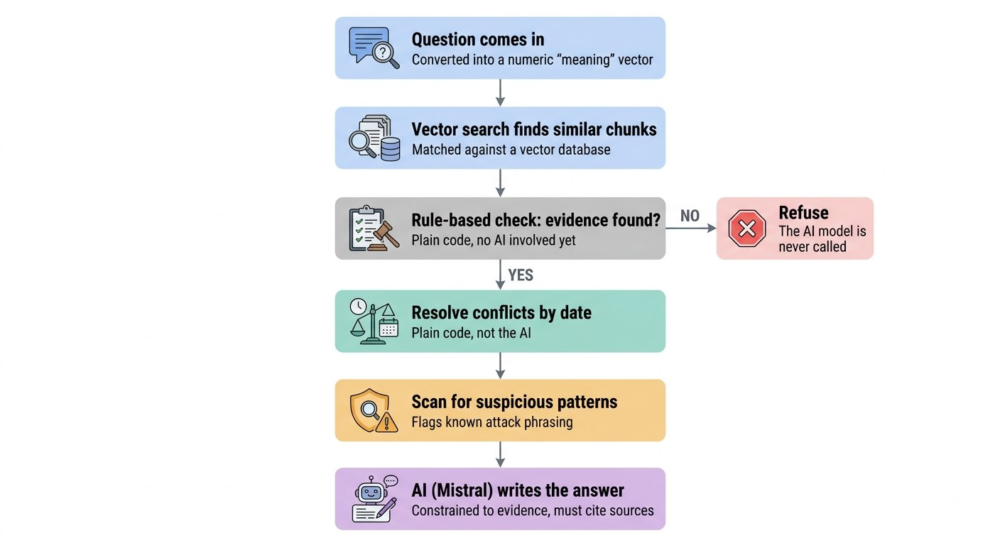
Grouped by what I actually built with them, not a keyword dump — hover any tag, and the fill line is roughly how much of my recent work leans on that category.
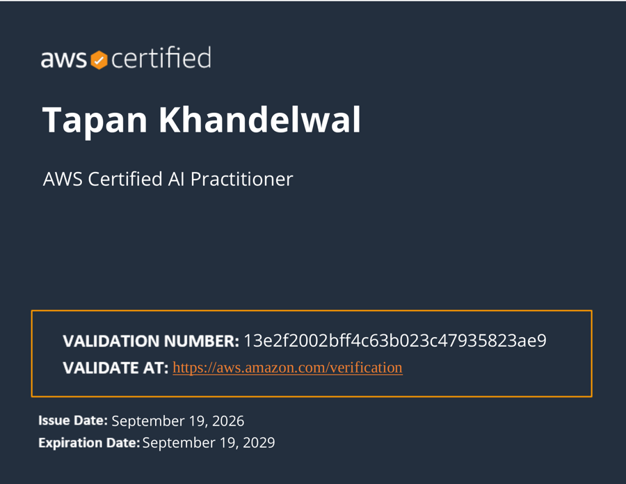
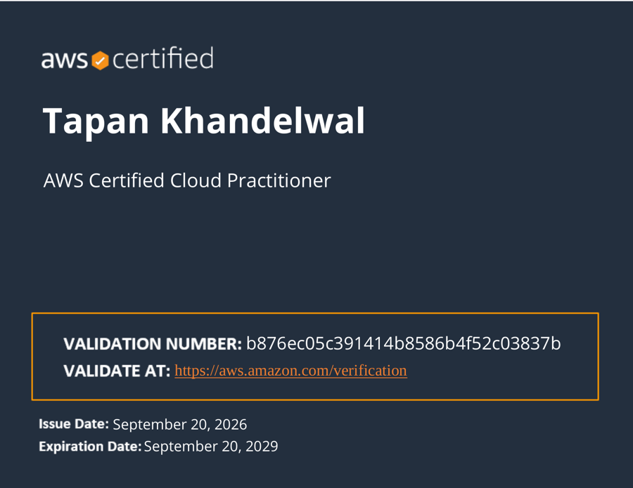
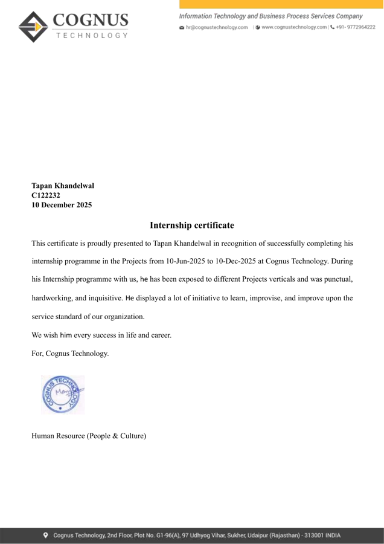
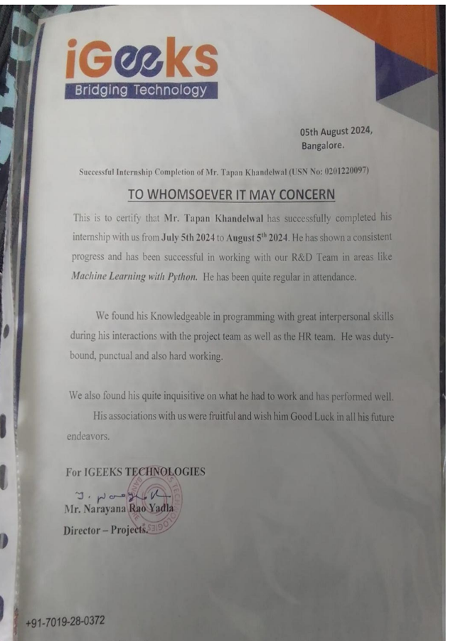
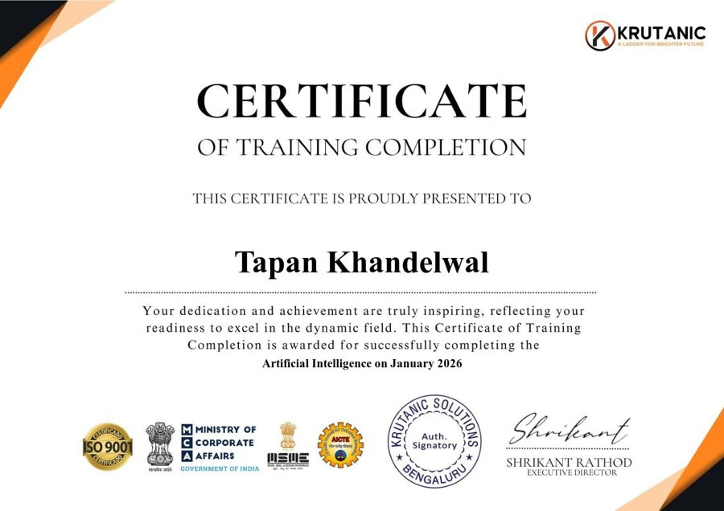
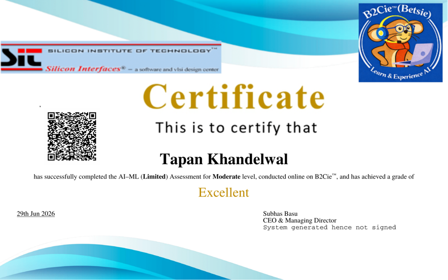
First author on a peer-reviewed paper proposing a hybrid CNN–LSTM architecture for deepfake detection — pairing spatial feature extraction with sequential analysis to catch inconsistencies across frames, plus a hashing-based authentication module to detect tampering. Validated on 84,377 images at 95.2% accuracy, outperforming the traditional CNN-only baselines it was compared against.